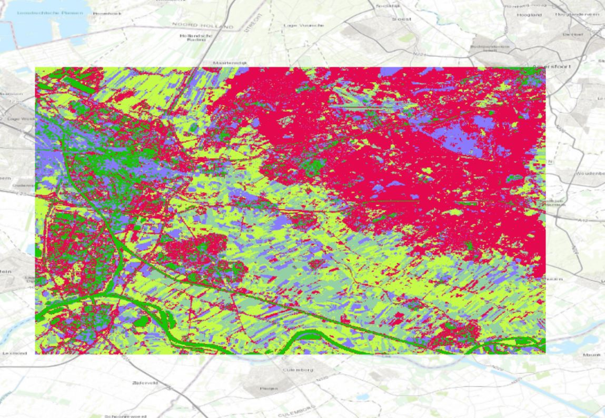
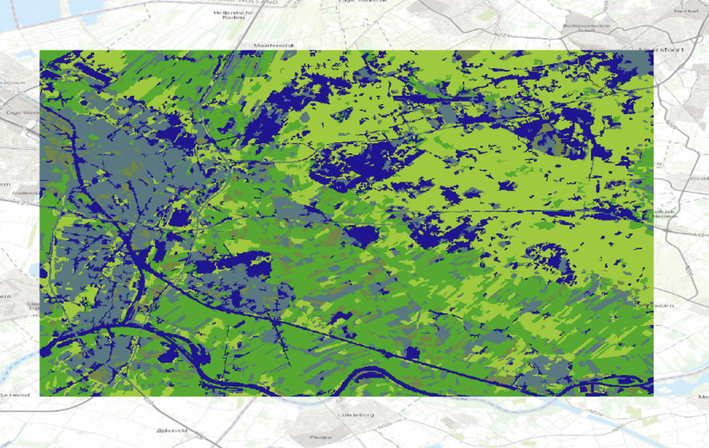
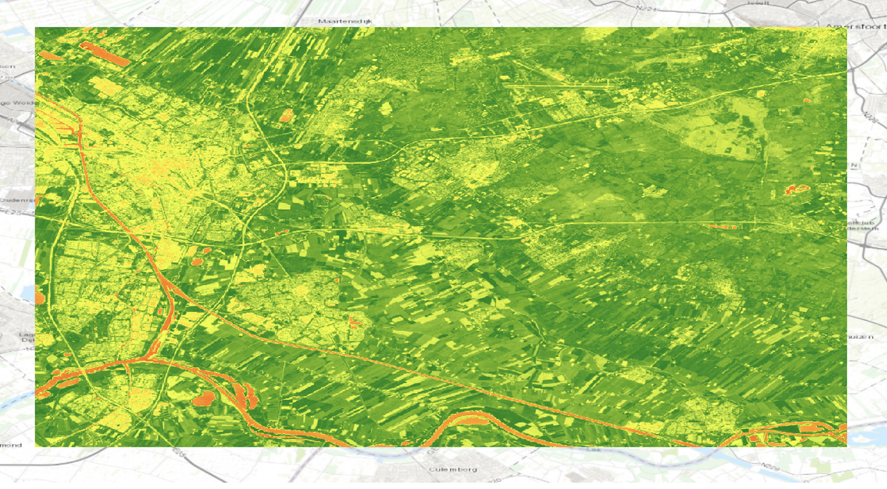

Land classification models
Understanding land cover classification systems
Land cover classification systems categorize the physical material on the surface of the earth, such as vegetation, urban infrastructure, water bodies, and bare soil. These systems are crucial for environmental monitoring, urban planning, agriculture, and climate studies, as they provide detailed and accurate information about the Earth's surface. Through my project, I learned how to download and find satellite data using Google Earth Engine, a powerful platform for geospatial analysis. Additionally, I developed skills in coding with Java, which is essential for processing and analyzing large datasets. This experience also introduced me to the concept of data training, where large AI models are trained to recognize different land cover types. Moreover, I learned how to supervise classification myself, ensuring that the land cover maps generated are accurate and reliable. These skills are essential for producing high-quality, actionable geospatial data that can inform decision-making in various fields.

Screenshot of a false color composite in ArcGIS Pro using band combination B8, B3, and B2; the near-infrared band (B8) shows the chlorophyll of plants, thereby reflecting the distribution and density of vegetation in Utrecht.
Unsupervised Pixel Based Classification
In this method, the computer autonomously categorizes land cover types using remote sensing data, analyzing spectral differences among individual or small groups of pixels. While this approach yielded beautiful results, understanding the specific land cover types represented by each color required prior knowledge of the region. The prominent red color, indicating vegetation density, effectively highlighted areas with significant greenery, offering clear insights into vegetation distribution.
Unsupervised Object Based Classification
Similar to the Unsupervised Pixel-Based method, this approach also utilizes spectral differences but organizes land into homogeneous regions representing various features like buildings, water bodies, or agriculture. Although already being familiar with the visible geographical characteristics is beneficial for interpreting the results, this method provided detailed and straightforward outcomes, facilitating easy analysis of land cover patterns.
Supervised Pixel Based Classification
 In contrast to unsupervised methods, this approach involves manual classification of land cover types based on predefined training data. While offering control over classification and reducing potential errors from automated processes, results may lack detail and be subject to human biases. Nevertheless, the resulting map aligns with those from previous classification methods, highlighting distinct land cover types across Utrecht.
In contrast to unsupervised methods, this approach involves manual classification of land cover types based on predefined training data. While offering control over classification and reducing potential errors from automated processes, results may lack detail and be subject to human biases. Nevertheless, the resulting map aligns with those from previous classification methods, highlighting distinct land cover types across Utrecht.
NDVI
The NDVI method is particularly valuable for mapping vegetation density by measuring the difference between near-infrared and red light reflectance. This index provides a clear indication of vegetation health and density. Applying the 'inverse' option enhances interpretability, where green hues indicate higher vegetation density. NDVI effectively visualizes the extent of greenery in Utrecht and surrounding areas, offering a detailed and accessible assessment of vegetation cover.
Reflection on the maps in this project
I am particularly pleased with the results of the Unsupervised Pixel-Based Classification, as it clearly shows the vegetation spread (in red) across Utrecht. It beautifully highlights the division of vegetation around the city center and the smaller villages nearby. The significant amount of vegetation to the northeast of the city center is interesting, although it was something I was already aware of before creating this map. However, I believe that combining this Unsupervised Classification map with a Supervised Pixel-Based Classification would enhance the results. The Supervised map allowed me to apply my knowledge of the area to classify land cover accurately and manually verify classifications. This method also clarified which colors represented specific types of coverage, which was less clear in the Unsupervised maps. Despite its lack of detail, the Supervised map provides a clear, general overview of land coverage in Utrecht, making it a valuable complement to the more detailed Unsupervised map.